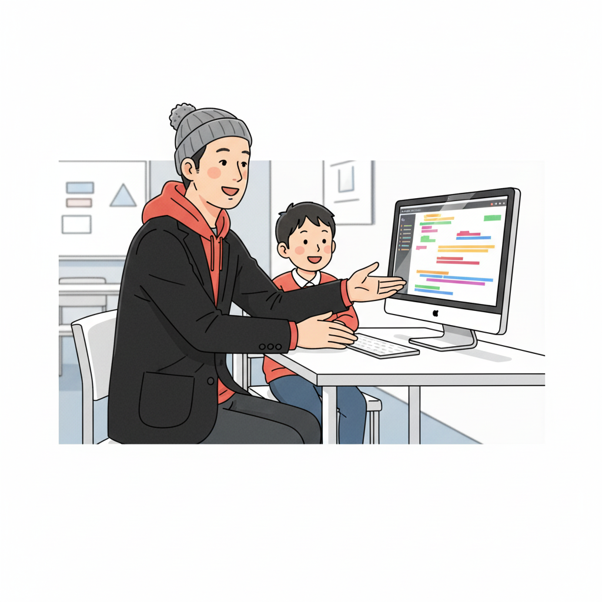
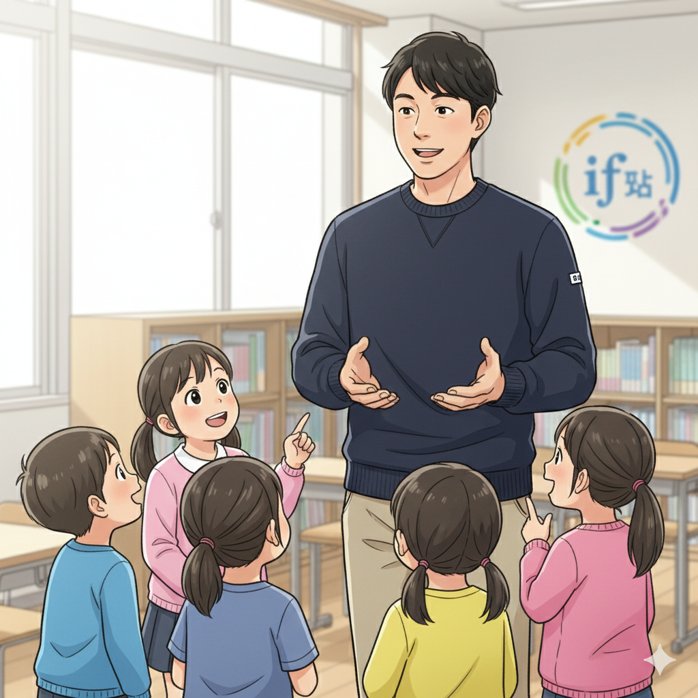

集中力は才能の原石！ADHDのY君がプロゲーマーになるまで（塾頭）

皆さん、こんにちは！if塾 塾頭です。今日は、ADHDを持つY君の劇的な成長ストーリーをお話しします。Y君は、幼い頃からゲームに夢中で、その集中力は周りを驚かせるほどでした。しかし、学校の授業には全く集中できず、「発達障害」という言葉が頭をよぎる日々…。
そんなY君がif塾に出会ったのは、彼が中学2年生の時。最初は、ゲームばかりしていることを心配していたお母様が、藁にもすがる思いでif塾に相談に来られました。私はY君とじっくり話す中で、彼の並外れた集中力こそが、彼の最大の才能だと確信しました。
if塾では、Y君の興味を惹くように、ゲームのロジックをプログラミングで再現する授業を取り入れました。すると、Y君はまるで水を得た魚のように、プログラミングの世界に没頭し始めたのです。好きなこと×ICT教育で、Y君の才能は一気に開花しました。
今では、Y君はプロのeスポーツプレイヤーとして活躍しています。彼の集中力は、まさに才能そのもの。if塾は、Y君のように、才能を秘めた子どもたちを応援しています。
苦手を得意に変える！ChatGPTとAI学習の可能性（CTO）
こんにちは、CTOです。僕も実は、子どもの頃から周りのペースについていくのが苦手で、授業についていけないこともありました。高校生の時に塾頭と出会い、プログラミングを始めたことで、世界が変わりました。
今、僕たちが注目しているのは、ChatGPTをはじめとするAI技術です。特に、発達特性を持つ子どもたちにとって、AIは強力な学習支援ツールになり得ます。例えば、文章の理解が苦手な子には、AIが文章を要約したり、図解したりすることで、学習のハードルを下げることができます。
また、機械学習を活用すれば、一人ひとりの学習ペースや理解度に合わせて、最適な学習プランを自動的に作成することも可能です。if塾では、AIとICTを組み合わせることで、発達障害を持つ子どもたちの「集中力」を最大限に引き出し、苦手なことを得意に変えるためのサポートをしています。
僕自身、プログラミングを通じて、自分の特性を強みに変えることができました。if塾では、子どもたち一人ひとりの個性を尊重し、その才能を伸ばすための最適な環境を提供しています。
成功体験の積み重ねが自信に！if塾での出会いが人生を変える（塾長）

こんにちは、塾長です。私自身もADHDとASDの診断を受け、中学時代は特別支援学級に通っていました。当時は、何をやってもうまくいかないと感じ、自信を失っていました。
しかし、高校で塾頭と出会い、if塾に通うようになったことで、私の人生は大きく変わりました。塾頭は、私の良いところを見つけて褒めてくれ、小さな成功体験を積み重ねさせてくれました。その結果、私は自信を取り戻し、国立大学に進学することができました。
if塾では、私のような経験を持つスタッフが、子どもたち一人ひとりに寄り添い、丁寧にサポートしています。仲間との出会いも、大きな力になります。お互いを尊重し、励まし合いながら、共に成長していく。そんな温かいコミュニティが、if塾にはあります。
発達障害は、決してハンディキャップではありません。むしろ、才能の種を秘めていると私たちは信じています。if塾は、その種を育み、花開かせるための場所です。もし、あなたが今、不安や悩みを抱えているなら、ぜひ一度、if塾に相談に来てください。私たちは、あなたの可能性を信じています。
🎯 興味を持っていただいた方へ
if塾では、発達特性を持つ子どもたちの「好き」を「才能」に変える教育を行っています。現在の記事内容と実際の活動に大きなズレはありませんが、詳細については直接お問い合わせください。
📌 記事について
この記事は、塾頭による完全自動化への挑戦としてAIが自動生成しています。将来的には塾頭が執筆しているような記事になることを目指しており、現時点では事実と異なる内容が含まれる可能性があります。最新の正確な情報については、お問い合わせフォームよりご確認ください。
🤖 Generated with AI - if塾のブログ自動化プロジェクト